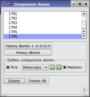

| Using | Features | Links |
The Comparison Atoms panel facilitates the selection of atoms for use in the comparison of conformational search structures.
To open this panel, choose Comparison Atoms from the Search variables option menu in the CSearch tab of the Conformational Search panel and click Edit.
During conformational searches, new structures are generated and minimized. The structures are then compared against other low-energy structures that have already been found in the search. The comparison is performed by rigid superposition, comparing only those atoms specified as "comparison atoms" in the setup.
The simplest way to create comparison atoms is to click the Perform Automatic Setup button in the Conformational Search panel. MacroModel makes reasonable decisions about which atoms should be chosen, and generates a list of the atoms. This list appears in the text box at the top of the panel.
The features of the Comparison Atoms panel work in the same way as for multiple minimization (see MacroModel Minimization of Conformers with Redundant Conformer Elimination).

This list shows the atoms that define the comparison atoms to use in the calculations. You can select a line in the list to display or delete, or redefine the atom by picking a different atom.
If you clicked Perform Automatic Setup in the Conformational Search panel, this list contains the results of the setup when you open the panel.
Add all the non-hydrogen atoms and the hydrogen atoms attached to oxygen and sulfur to the comparison atoms list.
Add only the non-hydrogen atoms to the comparison atoms list.
Use the standard picking controls in this section to define comparison atoms. Once an atom has been picked, a new entry is displayed in the comparison atoms list.
If this option is selected, Maestro places peach "star" markers on the atoms with an = next to them. To distinguish the currently selected atom, its marker is colored turquoise.
To delete a defined comparison atom, select it by clicking on it in the list, or re-pick the atoms that define it, then click Delete.
To delete all the defined comparison atoms, click this button.